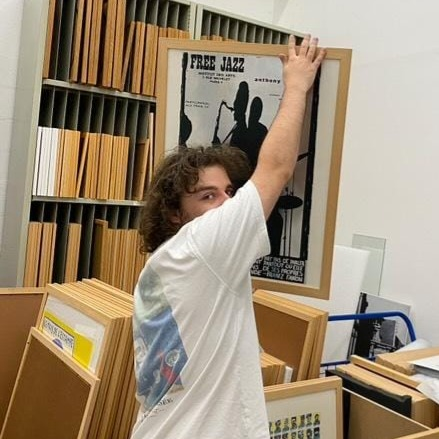

Recherche documentaire
Consultation de bibliothèques spécialisées, catalogues, publications scientifiques et ressources patrimoniales.
Antoine Zak — Historien de l'art
Accompagnement des particuliers et des professionnels dans l'identification, l'étude et la reconstitution de l'historique des œuvres et objets d'art.
Demander une étude
Après une licence en histoire de l'art et archéologie ainsi que deux masters en recherche en histoire de l'art et en patrimoine et musée réalisés à l'Université de Lille, je me suis spécialisé dans l'étude des œuvres et des collections patrimoniales.
Mes expériences au sein du Musée des Beaux-Arts d'Arras et du Musée Henri Matisse m'ont permis de développer une expertise en recherche documentaire, gestion des collections, régie des œuvres et conservation du patrimoine.
Je possède aujourd'hui un vif intérêt pour la recherche de provenance. Retracer l'historique d'un objet d'art est devenu un enjeu majeur pour les musées, les collectionneurs et les particuliers souhaitant mieux comprendre l'origine et le parcours de leurs biens.
Grâce à mon expérience universitaire et professionnelle, je suis en mesure de mener des recherches approfondies afin de reconstituer l'histoire de votre objet.
Consultation de bibliothèques spécialisées, catalogues, publications scientifiques et ressources patrimoniales.
Analyse d'archives publiques et privées afin de retrouver les traces historiques d'un objet ou de ses propriétaires.
Accès à des outils, bases de données et ressources utilisés dans le secteur patrimonial et muséal.
La connaissance de la provenance renforce la valeur patrimoniale et financière d'un objet, facilite son expertise et crédibilise toute transaction.
Retracer le parcours d'un objet permet d'en saisir la signification historique, d'identifier ses propriétaires et de reconstituer son contexte d'origine.
Documenter un objet, c'est aussi le préparer à être transmis, légué ou conservé, en constituant une mémoire fiable pour les générations suivantes.
Vous souhaitez connaître l'origine d'un objet, documenter une collection ou reconstituer une provenance ?
Un premier échange permet d'évaluer les pistes de recherche envisageables.
Contacter par e-mail